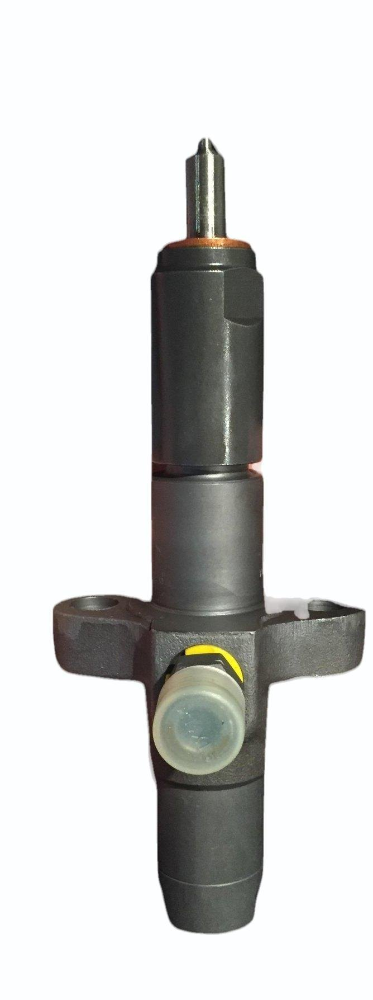
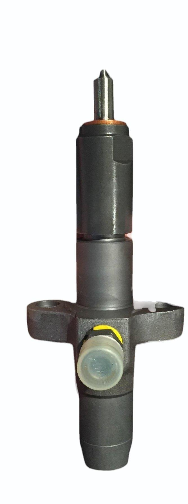
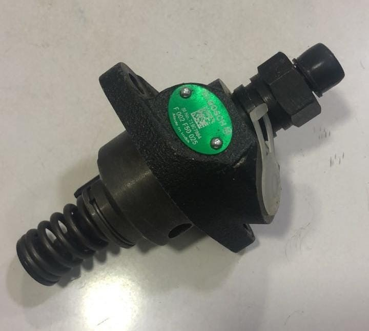
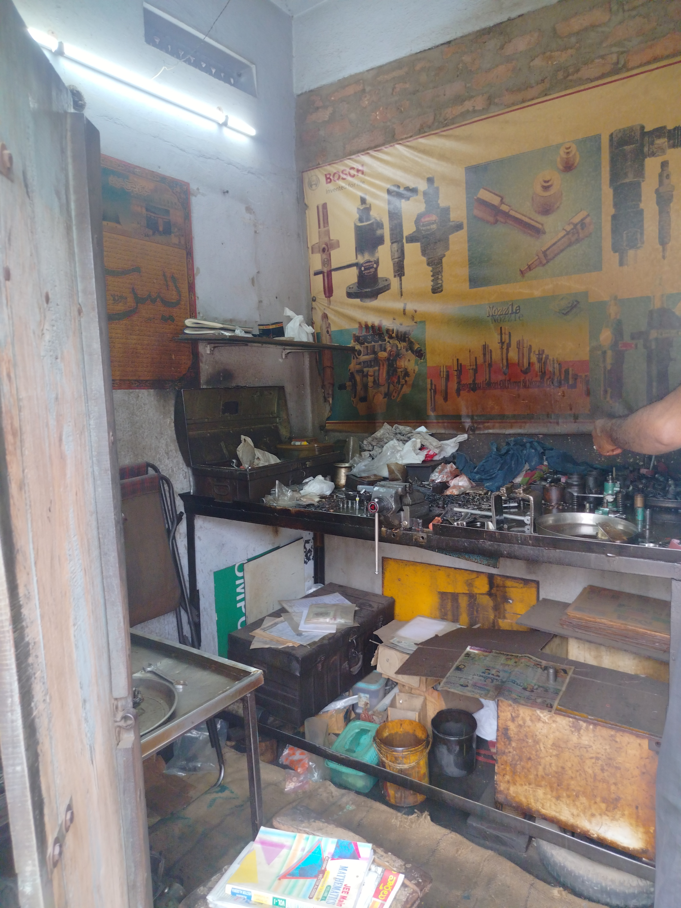

At KHAN DIESEL WORKS in Vinukonda, we specialize in repairing fuel injectors and fuel pumps for single-cylinder diesel engines at highly reasonable prices. Our experienced technicians diagnose issues like clogged nozzles, fuel leakage, and pressure faults with precision, ensuring your engine gets the right fuel delivery and spray pattern for optimal performance. Whether it's a tractor, generator, or agricultural equipment, we clean, calibrate, or replace faulty components using reliable tools and quality parts. Trusted by local customers for our honest service and fair pricing, Khan Diesel Works is your go-to destination for efficient diesel engine repairs.
వినుకొండలోని **ఖాన్ డీజిల్ వర్క్స్** లో మేము సింగిల్ సిలిండర్ డీజిల్ ఇంజిన్లకు సంబంధించిన ఫ్యూయల్ ఇంజెక్టర్ మరియు ఫ్యూయల్ పంప్ మరమ్మతులు న్యాయమైన ధరలకు అందిస్తున్నాము. ఇంజిన్ పనితీరులో సమస్యలు వస్తే, మేము నాజిల్ బ్లాక్ అవడం, ఇంధన లీకేజ్, లేదా ప్రెషర్ లోపం వంటి లోపాలను ఖచ్చితంగా గుర్తించి పరిష్కరిస్తాము. ఫ్యూయల్ ఇంజెక్టర్లను శుభ్రపరచడం, సరిగ్గా స్ప్రే అయ్యేలా కేలిబ్రేట్ చేయడం లేదా అవసరమైతే భాగాలను మార్చడం చేస్తాము. అలాగే ఫ్యూయల్ పంప్ లోని సీల్స్, వాల్వులు, ప్రెషర్ మెకానిజంలను పరిశీలించి అవసరమైన మరమ్మతులు చేస్తాము. నమ్మకమైన సేవ, న్యాయమైన ధరలతో ఖాన్ డీజిల్ వర్క్స్ స్థానిక రైతులు, జనరేటర్ యజమానులు మరియు మెకానిక్స్ నందు విశ్వాసాన్ని సంపాదించుకుంది.
KHAN DIESEL WORKS specializes in the meticulous repair and servicing of critical diesel engine components. Specifically, we expertly handle both fuel injectors (like the two distinct models shown, the black one and the longer MICO unit) and Bosch fuel pumps (like the unit with the visible spring). Our comprehensive service ensures these precision parts, vital for optimal single-cylinder diesel engine performance, are professionally restored to maintain your engine's efficiency and reliability.
ఖాన్ డీజిల్ వర్క్స్ (KHAN DIESEL WORKS) ముఖ్యమైన డీజిల్ ఇంజిన్ భాగాల మరమ్మత్తు మరియు సర్వీసింగ్లో నైపుణ్యం కలిగి ఉంది. ప్రత్యేకంగా, మేము ఫ్యూయెల్ ఇంజెక్టర్లు (చూపబడిన రెండు వేర్వేరు మోడల్లు, నలుపు రంగు మరియు పొడవైన MICO యూనిట్) మరియు బోష్ ఫ్యూయెల్ పంపులు (స్ప్రింగ్తో కూడిన యూనిట్ వంటివి) రెండింటినీ నిపుణంగా నిర్వహిస్తాము. మీ ఇంజిన్ సామర్థ్యం మరియు విశ్వసనీయతను నిర్వహించడానికి ఈ ఖచ్చితమైన భాగాలు అత్యంత ముఖ్యమైనవి, మరియు వాటిని వృత్తిపరంగా పునరుద్ధరించడానికి మా సమగ్ర సేవ హామీ ఇస్తుంది.

At KHAN DIESEL WORKS, under the leadership of our mechanical expert Mr. P. Karimulla Khan, we give the highest priority to trustworthiness in our work. We guarantee that every diesel pump or injector you entrust to us is handled with expertise and dedication. Our services are offered at reasonable prices, and we are committed to repairing your engine components in an excellent and elegant manner, without compromising on quality.
ఖాన్ డీజిల్ వర్క్స్ (KHAN DIESEL WORKS) వద్ద, మా మెకానికల్ నిపుణులు మిస్టర్ పి. కరీముల్లా ఖాన్ గారి నేతృత్వంలో, మేము మా పనిలో విశ్వసనీయతకు అత్యధిక ప్రాధాన్యత ఇస్తాము. మీరు మాకు అప్పగించే ప్రతి డీజిల్ పంప్ లేదా ఇంజెక్టర్ను మా వద్ద నైపుణ్యం మరియు అంకితభావంతో నిర్వహించబడుతుందని హామీ ఇస్తున్నాము. మా సేవలు సమంజసమైన ధరలకు అందించబడతాయి, నాణ్యతలో ఎటువంటి రాజీ లేకుండా, అద్భుతమైన మరియు సొగసైన పద్ధతిలో మీ ఇంజిన్ భాగాలను సరిచేయడానికి మేము కట్టుబడి ఉన్నాము.
.jpg)
Under the skilled guidance of our chief mechanic, Mr. P. Karimulla Khan, KHAN DIESEL WORKS guarantees a service defined by precision, experience, and absolute reliability. Mr. Khan’s extensive knowledge in repairing single-cylinder diesel engine fuel pumps and injectors ensures that every component is handled with meticulous care and technical expertise. His leadership is the cornerstone of our promise to deliver high-quality, trustworthy workmanship that gets your engine running efficiently and reliably.
We are conveniently located at NRT Road, Opposite Aruna Theatre, Kothaleta, Vinukonda. Our easily accessible workshop stands ready to serve all your single-cylinder diesel engine repair needs. We invite you to visit our facility, meet our expert team, and experience the trustworthy, professional service led by Mr. P. Karimulla Khan.
Find us on Google Mapsమా చిరునామా: ఎన్.ఆర్.టి. రోడ్, అరుణా థియేటర్ ఎదురుగా, కొత్తాలెట, వినుకొండ. మీ సింగిల్-సిలిండర్ డీజిల్ ఇంజిన్ మరమ్మత్తు అవసరాలన్నింటికీ సేవలు అందించడానికి మా వర్క్షాప్ అందుబాటులో ఉంది. దయచేసి మా స్థలాన్ని సందర్శించి, మా నిపుణుల బృందాన్ని కలవండి మరియు మిస్టర్ పి. కరీముల్లా ఖాన్ గారి నేతృత్వంలో అందించే విశ్వసనీయమైన, వృత్తిపరమైన సేవను అనుభవించండి.
గూగుల్ మ్యాప్స్లో మమ్మల్ని కనుగొనండి
The foundation of KHAN DIESEL WORKS was laid in 1980 by our esteemed founder, the highly skilled Mr. P. Hussain Khan, who was renowned for his excellent and extremely high-quality workmanship. Our current mechanic, Mr. P. Karimulla Khan, absorbed and learned the immense experience and expertise in single-cylinder diesel engine nozzles from him, ensuring this legacy of reliability and excellence is proudly carried forward.
ఖాన్ డీజిల్ వర్క్స్ (KHAN DIESEL WORKS) యొక్క పునాది 1980లో గొప్ప నిపుణులైన మా వ్యవస్థాపకులు, శ్రీ పి. హుస్సేన్ ఖాన్ గారి చేతుల మీదుగా వేయబడింది. అద్భుతమైన మరియు అత్యంత నాణ్యమైన పనికి ఆయన ప్రసిద్ధి చెందారు. సింగిల్ సిలిండర్ డీజిల్ ఇంజన్ నాజిల్స్ అపారమైన అనుభవం మరియు నైపుణ్యాన్ని స్వీకరించి, నేర్చుకున్న మా ప్రస్తుత మెకానిక్ అయిన శ్రీ పి. కరీముల్లా ఖాన్ గారు, ఈ పరంపరలోని వారసత్వాన్ని, అదే విశ్వసనీయత మరియు శ్రేష్ఠతతో కొనసాగిస్తున్నారు.